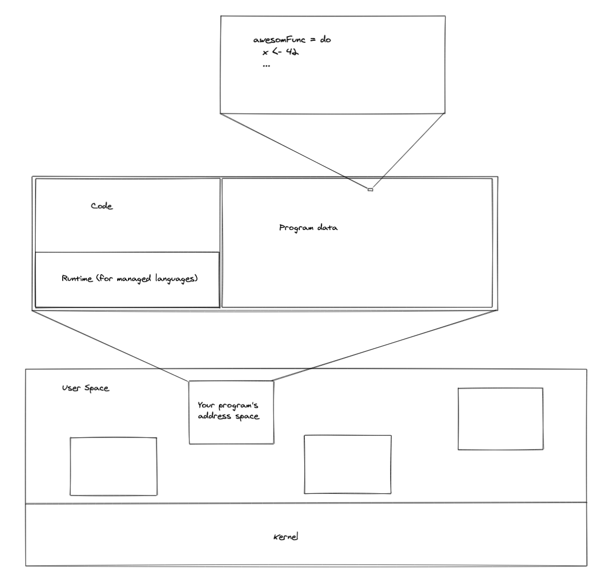

Modern Computer Memory
a very deep rabbit hole indeed!
What you'll learn
- What is an iconoscope?
- What did 1MB of RAM cost in 1980?
- How modern computer memory works
In the early days
ENIAC
20 words and punchcards
Programmed by rewiring plugs
EDVAC
First stored-program computer
1,000 44-bit words
A memory "crisis"
500x500 grid of pixels gives 250Kb of memory
Modern shared memory layout
What happens before foo = "bar"?
What happens before foo = "bar"?
- Create an address space for the process
- Load the code from disk
- Allocate some memory in the program heap for the value
Exploring the address space
- How many bytes can reside in a 64-bit address space?
- How does the OS know where to get the first byte of the program's code?
- Why doesn't the computer crash if a program uses more than the machine's available physical memory?
Virtual Memory
- OS abstraction hiding details of physical memory
- Standardizes addresses
- Provides process memory isolation (ideally)
Bits all the way down
What do the following lists of numbers have in common?
- 0.25, 2, 100, 3000
- .75, 256, 163000000, 524000000
The progression in access time (ns) and KBs of capacity, respectively